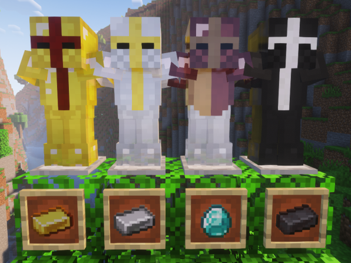
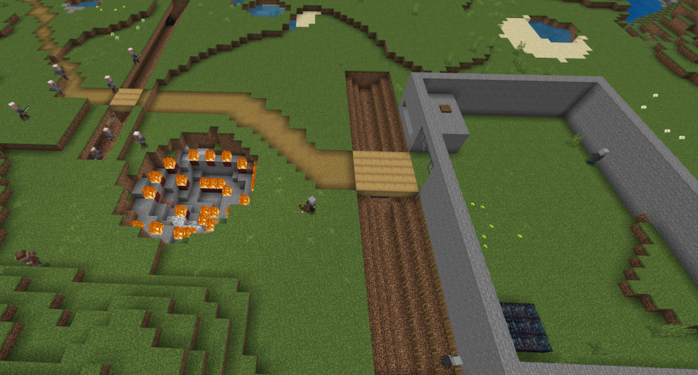

Here are my projects from newest to oldest:
this website

World Box map of Riga

First World Box map

My first semi public mc server, you can still join my servers if they are on at the moment of you reading this, dm me on discord

Texture packs, you can find them in this website at the top of the site
A background for Wallpaper Engine of 2000 cheeses
"Zīmulis 3 KRĀSAS!!!" Was the third version of a series of my drawing games on scrach, in this one it combines features from the previous 2 drawing games that are now deleted and it added the option to get more colours.
A ww1 inspired minecraft bedrock map i made, the objective is to take over the pillager fort with the weapons found in your trench
